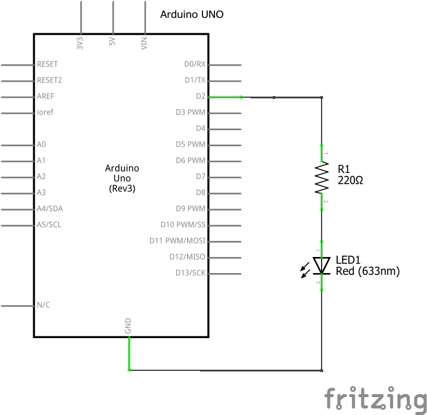
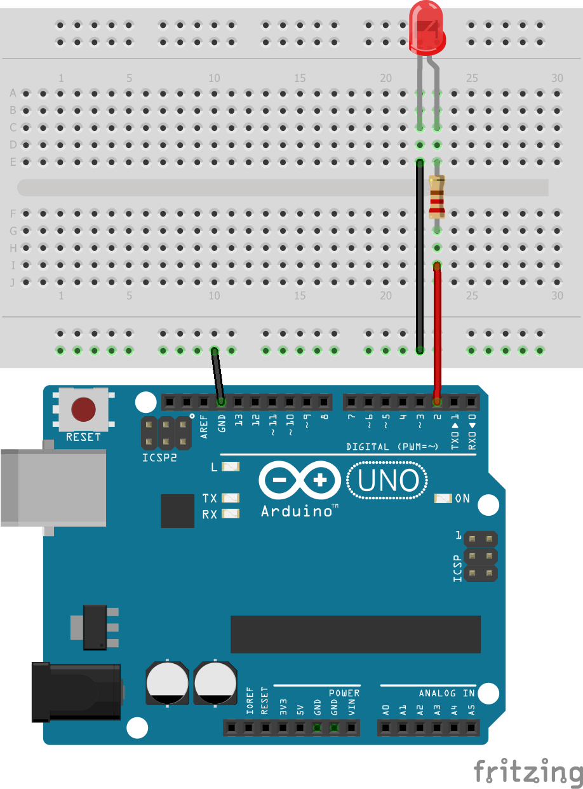

2. LED controlat per la placa Arduino¶
Monto a Protoboard El següent esquema elèctric.
{kind=link}

{kind=link}

Ara és necessari programar la placa Arduino One per al LED vermell.
: Descarregueu: Circuit elèctric en format Fritzing <Protoboard/Arduino-Propo-02-Led-D2.fzz>
Exercicis¶
El següent programa puja a la placa Arduino. El LED vermell ha de parpellejar, encendre un segon i desactivar -lo durant un segon.
1 2 3 4 5 6 7 8 9 10 11 12 13 14 15 16 17 18 19 20 21 22
int LED_PIN = 2; // Ejecuta una sola vez las siguientes instrucciones void setup() { // El led se conecta a un pin de salida pinMode(LED_PIN, OUTPUT); } // Repite para siempre las siguientes instrucciones void loop() { // Enciende el LED (a nivel alto) digitalWrite(LED_PIN, HIGH); // Espera 1000 milisegundos (1 segundo) delay(1000); // Apaga el pin 2 (a nivel bajo) digitalWrite(LED_PIN, LOW); // Espera 1000 milisegundos (1 segundo) delay(1000); }
Modifiqueu el programa anterior perquè el LED sembli un alarma. Ha d’il·luminar durant una desena part i sortir durant deu segons.
Modifiqueu el programa perquè el LED sembli una espelma artificial. El temps d’encesa ha de ser aleatori entre 100 i 300 mil·lisegons. El temps lliure ha de ser aleatori entre 50 i 150 mil·lisegons.
La instrucció que s’ha d’utilitzar és:
1
delay( random(mínimo, máximo) );
Modifiqueu el programa perquè el LED s’encengui i s’apagui ràpidament (durant 100 mil·lisegons) i després s’encengui i s’apagui lentament (durant 1 segon).
Modifiqueu el programa per al LED a parpellejar dues vegades ràpid (cada 100 mil·lisegons) i després romangueu fora de 2 segons.
Modifiqueu el programa perquè el LED faci el contrari que en l'exercici anterior. S’ha d’apagar ràpidament dues vegades (cada 100 mil·lisegons) i s’ha de mantenir durant 2 segons.
Modifiqueu el primer programa per encendre i apagar el LED cada pocs mil·lisegons (d’1 a 100 mil·lisegons). Experiència amb diverses vegades per veure què passa.
L’ull humà no pot veure parpellejos de llum massa ràpids. Des de quants mil·lisegons es pot observar el parpelleig?